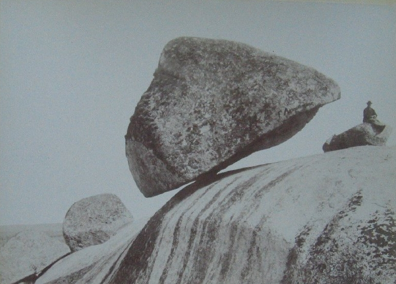

Tandil, fundada en 1823,es una ciudad
con una rica historia que se refleja en su
arquitectura y cultura. La Piedra Movediza,
uno de los símbolos más conocidos de Tandil,
fue una roca equilibrada que se cayó en 1912.
En su lugar actual se encuentra una réplica
de la misma.
